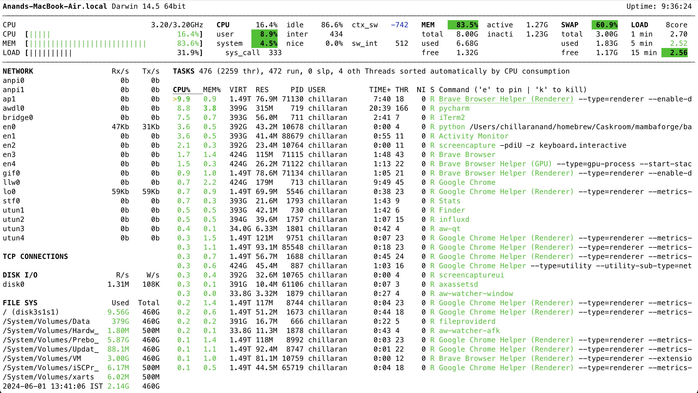

macOS - Log & track historical CPU, RAM usage

In macOS, we can use inbuilt Activity Monitor or third party apps like Stats to check the live CPU/RAM usage. But, we can't track the historical CPU & memory usage. sar, atop can track the historical CPU & memory usage. But, they are not available for macOS.
Netdata
Netdata1 is an open source observability tool that can monitor CPU, RAM, network, disk usage. It can also track the historical data.
Unfortunately, it is not stable on macOS. I tried installing it on multiple macbooks, but it didn't work. I raised an issue2 on their GitHub repository and the team mentioned that macOS is a low priority for them.
Glances
Glances3 is a cross-platform monitoring tool that can monitor CPU, RAM, network, disk usage. It can also track the historical data.
We can install it using Brew or pip.
$ brew install glances $ pip install glances
Once it is installed, we can monitor the resource usage using the below command.
$ glances

Glances can log historical data to a file using the below command.
$ glances --export-csv /tmp/glances.csv
In addition to that, it can log data to services like influxdb, prometheus, etc.
Let's install influxdb and export stats to it.
$ brew install influxdb $ brew services start influxdb $ influx setup $ python -m pip install influxdb-client $ cat glances.conf [influxdb] host=localhost port=8086 protocol=http org=avilpage bucket=glances token=secret_token $ glances --export-influxdb -C glances.conf
We can view stats in the influxdb from Data Explorer web UI at http://localhost:8086.

Glances provides a prebuilt Grafana dashboard4 that we can import to visualize the stats.
From Grafana -> Dashboard -> Import, we can import the dashboard using the above URL.
Conclusion
In addition to InfluxDB, Glances can export data to ~20 services. So far, it is the best tool to log, track and view historical CPU, RAM, network and disk usage in macOS. The same method works for Linux and Windows as well.
Need further help with this? I am available for hire.

Chillar Anand
A blog about python, careers & life.
To contact me, send a message here.